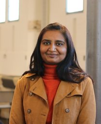

Postdoctoral Researcher · L3S Research Center, Leibniz University Hannover
I am a postdoctoral researcher at the L3S Research Center working within the EU Horizon RECITALS project. My research sits at the intersection of mechanistic interpretability, LLM safety & alignment, and multilingual NLP, with applications to social media, computational social science, zero-shot reasoning, and ethical content analysis. I completed my PhD in April 2026 under Prof. Wolfgang Nejdl, receiving a Magna cum laude distinction.

Research Interests
Recent News
Selected Publications
A Mechanistic Analysis of Safety-Language in LLMs
Submitted to ACL ARR August 2026 Under Review
Culture-Wiki: Benchmarking Different Cultures in Knowledge Recalling Tasks
Submitted to EMNLP 2026 Under Review
Towards Transparent Stance Detection: A Zero-Shot Approach Using Implicit and Explicit Interpretability
AAAI Conference on Web and Social Media (ICWSM) 2026 CORE A
Which Layers Matter? A Study of Layer-Selective LoRA in Centralized and Federated Fine-Tuning
ECML PKDD 2026 Workshop To appear
MTL-FLoRA: Federated Low-Rank Adaptation for Multi-Task Learning
ECML PKDD 2026 Workshop To appear
Exploring How Students Interact with AI for Detecting Moral Sentiments in Social Media
Array, Vol. 30, Elsevier, 2026 · IF 5.3 Q1
Enhancing Online Climate Discourse: A Two-Stage Framework for Climate Content Categorization and Moderation
IJCAI 2025 CORE A*
Interpretable Zero-Shot Stance Detection with Proactive Content Intervention
Information Processing & Management, 2025 · IF 8.1 Q1
Catalog: Exploiting Joint Temporal Dependencies for Enhanced Phishing Detection on Ethereum
ACM The Web Conference 2025 CORE A*
Harnessing Empathy and Ethics for Relevance Detection and Information Categorization in Climate and COVID-19 Tweets
CIKM 2024 CORE A
Toxicity, Morality, and Speech Act Guided Stance Detection
EMNLP 2023 Findings CORE A
A Multi-Task Model for Emotion and Offensive Aided Stance Detection of Climate Change Tweets
ACM The Web Conference 2023 CORE A*
Intensity-Valued Emotions Help Stance Detection of Climate Change Twitter Data
IJCAI 2023 CORE A*
Full list on Google Scholar · h-index 10, 320+ citations
Service & Teaching
Grants & Proposal Writing
Program Committees & Reviewing
Teaching
Mentoring & Supervision
Experience & Education
Postdoctoral Researcher
L3S Research Center, Leibniz University Hannover · EU Horizon RECITALS Project
LLM safety alignment, multilingual NLP, computational social science, federated learning.
PhD in Computer Science (Magna cum laude)
Leibniz University Hannover · Advisor: Prof. Wolfgang Nejdl
Stance detection, interpretable NLP, social media analysis, climate and COVID-19 discourse.
Researcher (TV-L 13)
L3S Research Center, Hannover
Researcher, Genomics Labs
Life Science & Health Care R&I Lab, Tata Consultancy Services
M.Tech, Computer Science & Engineering
IIT Patna · CGPA 9.1 (2nd in department) · GATE 99.93 percentile
System Engineer
Tata Consultancy Services
Contact